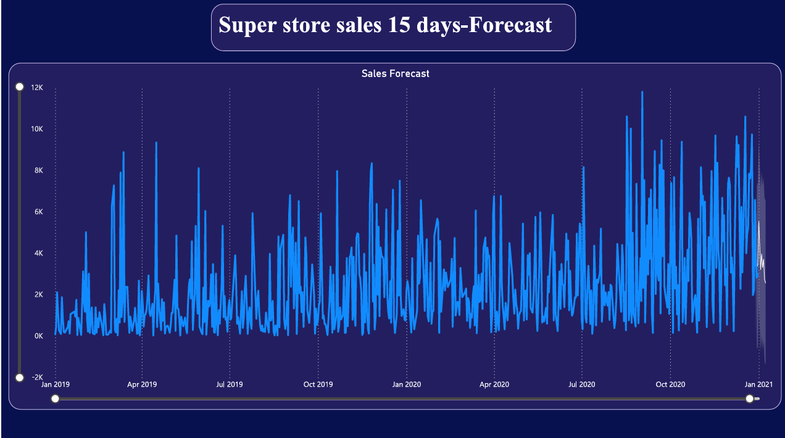

Project Overview
This project involved creating a comprehensive Business Intelligence solution for a retail "Superstore."
The goal was to analyze sales performance across regions and segments while providing a 15-day
forecast to assist in inventory management.
Key Insights from Analysis
- Regional Performance: The West region contributes the highest sales at 33.37%, followed by the East at 28.75%.
- Customer Segmentation: The "Consumer" segment drives nearly 48% of total revenue, highlighting the need for targeted marketing in this area.
- Operational Efficiency: Identified that "Standard Class" is the most preferred shipping mode, accounting for $0.33M in sales volume.
- Financial Health: Maintained a healthy profit of $175K against $1.6M in sales.
Forecasting & Predictive Modeling

Using historical data from 2019 to 2021, I implemented a 15-day sales forecast to visualize future demand spikes and prepare supply chains.
Technical Skills Applied
- SQL: Extracted and analyzed pizza sales and superstore data using complex queries.
- DAX: Created measures for quarterly trends, weekly revenue tracking, and interest analysis.
- Data Visualization: Designed dynamic slicers and drill-down visuals to enable actionable business insights[cite: 17].